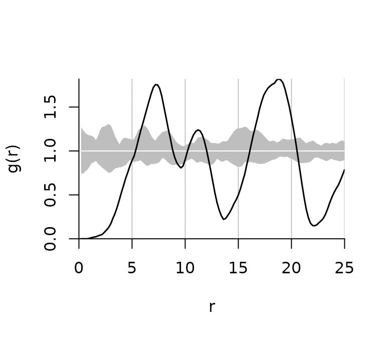
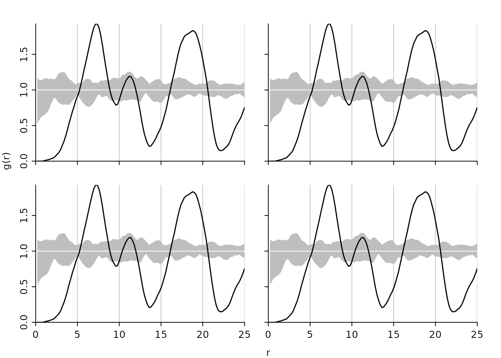

The apcf package provides methods to analyse patterns of objects of finite size and irregular shape using the adapted Pair-Correlation Function (PCF) as proposed by Nuske et al. (2009).
Background
The method suggested by Nuske et al. (2009) requires a certain number of null models for correcting the biased PCF and constructing a pointwise critical envelope. Null models are constructed by randomly moving (shift and rotation) the objects within the study area.
The alpha level of the pointwise critical envelope is \(\alpha = {n\_rank * 2} / {n\_sim + 1}\) according to (Besag and Diggle 1977, Buckland 1984, Stoyan and Stoyan 1994).
For the edge correction (based on Ripley 1981) a buffer with buffer distance \(r_{ij}\) is constructed around the object i for each pair of objects i and j. The object j is then weighted by the inverse of the proportion \(p_{ij}\) of the buffer perimeter being within the study area.
Being a density function the frequently used Epanechnikov kernel (Silverman 1986, Stoyan and Stoyan 1994) is used for smoothing the PCF. The smoothing is controlled by the bandwith parameter \(\delta\) and the step size r. Penttinen et al. (1992) and Stoyan and Stoyan (1994) suggest to set c aka stoyan-parameter of \(c / {\sqrt{\lambda}}\) between 0.1 and 0.2 with \(\lambda\) being the intensity of the pattern.
To separate the computationally intensive part (randomization of the objects and the calculation of the proportion of the buffer inside the study area) from the smoothing of the PCF we use a two step approach:
- calculate distances and buffer fractions for original and randomized patterns
- turn the distances and buffer fractions into a PCF together with a pointwise critical envelope
Example Data
To present the workflow we make use of the simulated patterns presented in Nuske et al. (2009). Shapefiles and WKB representations of the data are part of this package and documented as ?sim_patterns.

Simulated patterns (a: regular, b: random, c: clustered)
From Pattern to Distances
pat2dists() calculates distances between all object of a pattern closer than max_dist and determines the fraction of a buffer with distance dist inside the study area (needed for edge correction). It randomizes the original pattern to generate n_sim null models used for correcting the biased PCF and constructing an envelope. It’s advised against setting n_sim < 199, better still is 999 or even 9999.
It returns an object of class dists containing a data.frame with the columns sim, dist, and prop with an indicator of the model run (0:n_sim), distances between the objects of the patterns, and the proportion of a buffer with distance dist inside the study area. The size of the study area, the total number of objects, and the maximum distance are passed along as well.
# it's advised against setting n_sim < 199
dists <- pat2dists(area=sim_area_wkb, pattern=sim_pat_reg_wkb,
max_dist=25, n_sim=9, verbose=FALSE)
head(dists)
## sim dist ratio
## 1 0 24.65000 0.9238066
## 2 0 17.15157 1.0000000
## 3 0 20.22589 1.0000000
## 4 0 20.04445 1.0000000
## 5 0 24.13877 0.9517043
## 6 0 19.67296 1.0000000From Distances to PCF
dists2pcf() estimates the adapted pair correlation function of a pattern of polygons together with a pointwise critical envelope using kernel methods based on distances between objects.
It returns an object of class fv_pcf containing the function values of the PCF and the pointwise critical envelope. The number of null models, the rank of envelope value among the n_sim values and the bandwith/stoyan parameter are passed along.
pcf <- dists2pcf(dists, r=0.2, r_max=25, stoyan=0.15, n_rank=1)
head(pcf)
## PCF with pointwise critical envelopes
## Obtained from 9 simulations
## Edge correction: "Ripley"
## Alternative: "two.sided"
## Significance level of pointwise Monte Carlo test: 0.2
##
## r g lwr upr
## 1 0.2 0.000000000 0.6451025 1.266595
## 2 0.4 0.000000000 0.6203820 1.214719
## 3 0.6 0.000000000 0.6353140 1.184803
## 4 0.8 0.000000000 0.6857767 1.187771
## 5 1.0 0.005324562 0.7474053 1.187196
## 6 1.2 0.012042414 0.7903258 1.178189Plotting the PCF
plot.fv_pcf() is a plot method for the class fv_pcf. It draws a pair correlation function and a pointwise critical envelope if available.
plot(pcf)
# a panel of four plots
op <- par(mfrow=c(2,2), oma=c(3,3,0,0), mar=c(0,0,2,2),
mgp=c(2,0.5,0), tcl=-0.3)
plot(pcf, xaxis='t', yaxis='o', ann=FALSE)
plot(pcf, xaxis='t', yaxis='t', ann=FALSE)
plot(pcf, xaxis='o', yaxis='o', ann=FALSE)
plot(pcf, xaxis='o', yaxis='t')
par(op)
Technical Details
The adapted pair-corelation functions was original implemented in the Geodatabase PostGIS. PostGIS offers all necessary geoprocessing methods and is easy to handle knowing databases and SQL. The need to create lots of temporary tables and countless transformations of geodata from WKB stored in the table to the GEOS format for geometric operations rendered the process quite slow.
In this package the geometric operations (measuring distances between objects, buffers, intersects, and randomly moving objects) are carried out by GEOS. The geodata is read and transformed to GEOS format only once. All further manipulations are within the GEOS world. The usage of the GEOS library was made possible by Rcpp.
References
Besag, J. and Diggle, P.J. (1977): Simple Monte Carlo tests for spatial pattern. Journal of the Royal Statistical Society. Series C (Applied Statistics), 26(3): 327–333. https://doi.org/10.2307/2346974
Buckland, S.T. (1984): Monte Carlo Confidence Intervals. Biometrics, 40(3): 811–817. https://doi.org/10.2307/2530926
Nuske, R.S., Sprauer, S. and Saborowski, J. (2009): Adapting the pair-correlation function for analysing the spatial distribution of canopy gaps. Forest Ecology and Management, 259(1): 107–116. https://doi.org/10.1016/j.foreco.2009.09.050
Ripley, B.D. (1981): Spatial Statistics. John Wiley & Sons, New York. https://doi.org/10.1002/0471725218
Silverman, B.W. (1986): Density Estimation for Statistics and Data Analysis. Chapman and Hall, London.
Stoyan, D. and Stoyan, H. (1994) Fractals, random shapes and point fields: Methods of geometrical statistics. John Wiley & Sons, Chichester.